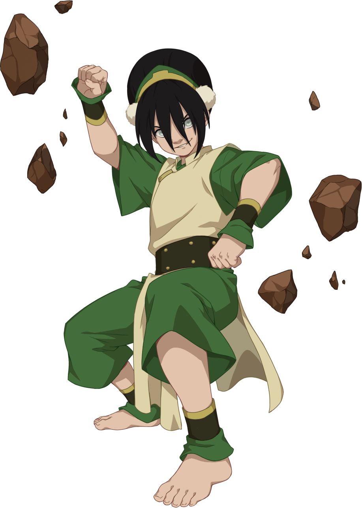
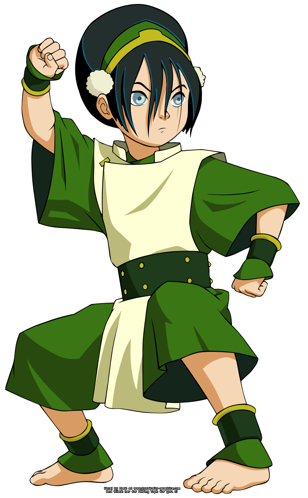
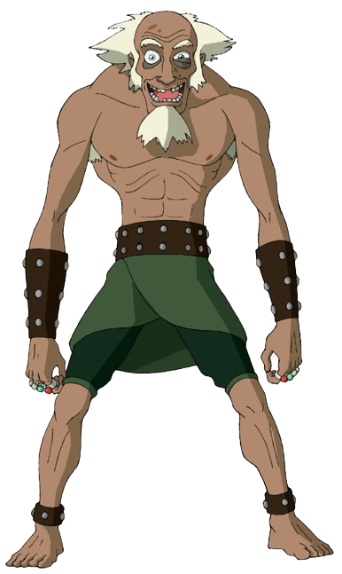
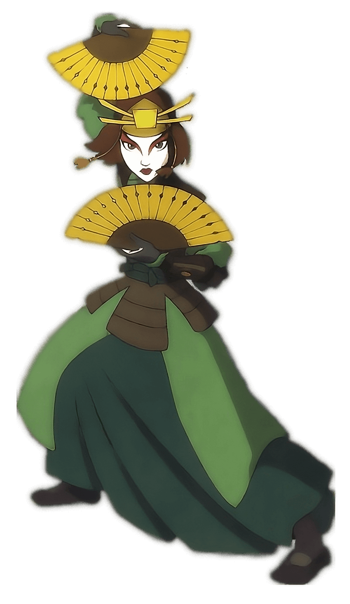

El Reino Tierra es una de las Cuatro Naciones y es la soberanía más grande y poblada del mundo. La gente del Reino Tierra es orgullosa y fuerte, buscando la coexistencia pacífica con otras naciones. Los Maestros Tierra usan sus habilidades para la defensa y la industria, protegiendo sus ciudades contra ataques de la Nación del Fuego durante la Guerra de los Cien Años. La economía del Reino Tierra se basa en la agricultura e industria limitada, siendo menos poderosa económicamente que la Nación del Fuego, que se beneficia de la tecnología.

Tierra Control
La Tierra Control es el arte místico de la geoquinesis, que permite controlar la tierra con la mente. Se basa en el estilo Hung Gar, conocido por sus movimientos fuertes que representan la fuerza de la tierra. Los Maestros Tierra, que residen en todo el Reino Tierra, utilizan esta habilidad.El elemento tierra representa la sustancia y otorga a los Maestros Tierra diversidad, fuerza, persistencia y durabilidad. Los primeros Maestros Tierra, Oma y Shu, aprendieron este arte de los tejones topo.
Personajes Favoritos

Toph
Man... controla el METAL.

Rey Bumi
Rey de Omashu, amigo del Avatar Aang y esta mas loco que una cabra.

Kyoshi
Las Guerreras Kyoshi defensoras de la Isla Kyoshi
Porque Toph es el mejor Personaje?
Partiendo desde la base, ella es ciega de nacimiento y sus padres siempre trataron de protegerla, sin embargo Toph nunca hizo caso a lo que a la edad de 6 años escapo de su casa y se escondio en una cueva que era habitada por tejones rojos (los primeros maestros tierra) y estos le enseñaro a "ver" usando la Tierra Control. Ademas tiene un excelente sentido del humor
Cuando descubre el Metal Control
Toph es llevada de vuelta a casa encerrada en una caja de metal. Intenta engañar a Yu pidiendo que la saque para ir al baño, pero Xin Fu lo detiene al anticiparlo. Toph intenta abrir la caja golpeándola, y Xin Fu le informa que, a pesar de ser la mejor Maestra Tierra del mundo, no puede controlar el metal. Sin embargo, Toph utiliza su Sentido Sísmico para "ver" las partículas de tierra dentro del metal y logra doblarlo utilizando su habilidad única.